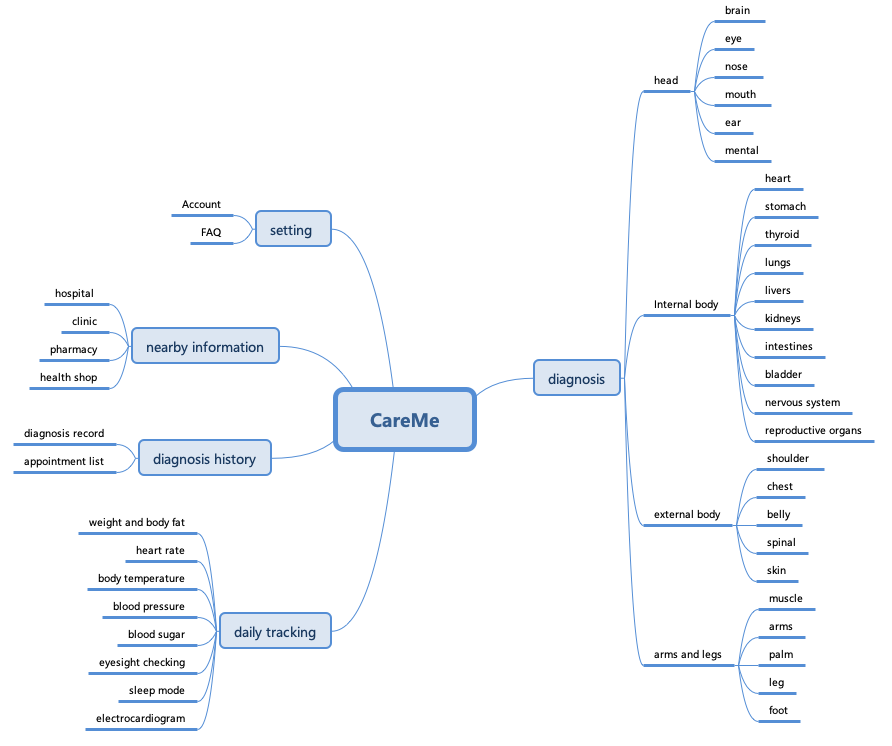
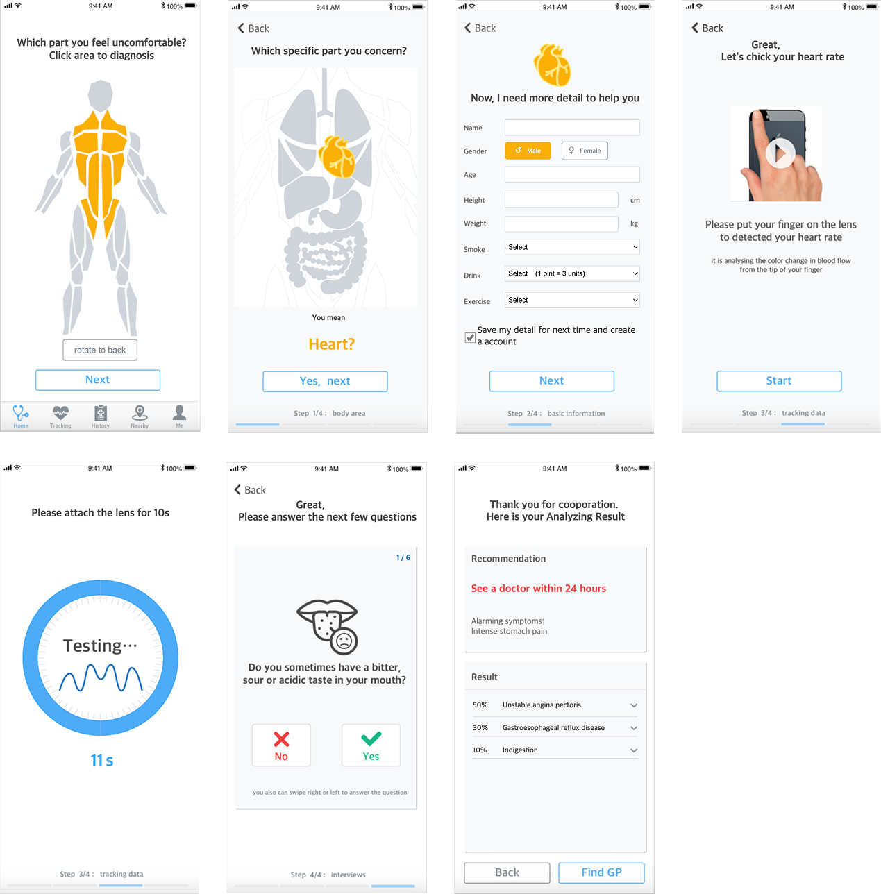

Diagnosis Symptom Application — CareMe
Project Overview and Goals
CareMe is a mobile application designed to support non-emergency users in identifying potential health conditions based on symptoms. It targets people with health literacy and limited English proficiency , aiming to improve access to reliable, easy-to-understand self-diagnosis tools.
Problem
Current symptom checkers (e.g., Babylon, Ask NHS) offer limited guidance, medical jargon, and no visibility on progress, leading to user confusion and low confidence, especially among underserved populations.
Goals
- Create a user-centred mobile app for symptom diagnosis that is clear, accessible, and supportive.
- Address language complexity, uncertainty in process flows, and lack of supportive features like daily health tracking.
- Deliver a tested MVP.
My Design Process
To ensure a user-centred design, I followed a structured process:

Research & Literature Review
Conducted a systematic literature review across mHealth solutions using PubMed and Google Scholar.
Key insights:
- 85% of smartphone users access health info (Pew, 2012).
- mHealth apps can enhance self-monitoring, reduce unnecessary GP visits, and support chronic care (Steinhubl et al., 2013).
- Most apps still fail to guide users with limited medical knowledge, especially non-native speakers.
Business Model Canvas Overview
Before diving into the design, I created a Business Model Canvas to align on the project’s strategic direction and ensure all stakeholders were on the same page.
- Problem: Long diagnosis wait times, fragmented symptom checkers, unreliable online info.
- Solution: Short, clear question flows; certified content; optional connected devices for added data.
- Unique Value: General organ-based symptom guidance in under 5 minutes.
- Target Users: Adults with non-emergency symptoms and low medical literacy.
- Channels: Clinics, social media, immigration centres, and product partnerships.

Persona construction
Based on the business model canvas, target users would need to fit the qualities:
- Limited English literacy (non-English natives) and health knowledge literacy.
- The situation is not an emergency, life-threatening, and their consciousness is clear enough to determine their body status.
- Focus on the low noise, low interference scene that would not cause the users anxiety and depression (i.e. domestic environment, office work environment).
Build IA and User Flow
To effectively address user needs and minimise frustration, the information architecture (IA) is organised into five key functions: symptom diagnosis, daily health tracking, medical history records, nearby healthcare services, and basic settings. Symptom diagnosis is positioned as the central and most essential feature, designed to enhance usability by categorising the human body into four regions, making symptom selection more intuitive and efficient.
With a well-defined information architecture in place, it’s essential to design an intuitive and seamless user journey. Since symptom diagnosis is the core functionality, the user flow is primarily centred around optimising this experience.

Establish the UI design
To create an intuitive and user-friendly interface, the main screen highlights the app’s primary function — symptom diagnosis. This feature is structured as a five-step process:
- Select the affected body area
- Enter user information
- Capture health data through connected devices
- Answer guided diagnosis questions
- Receive results and recommendations
Each step is designed with clear, actionable guidance to ensure users can navigate the experience confidently and without confusion. The interface adheres to established accessibility and usability principles by using plain language, ample white space, centralised content, and informative visuals to support comprehension.
The colour palette — white, grey, and blue — was chosen to convey a clean, professional, and trustworthy medical tone. A secondary highlight colour, orange, inspired by NHS branding, is used selectively to draw attention to key actions and important information.
Prototype demo: Click here
Validate the Design Concept
Before proceeding to development, a key design question needed to be addressed:
Does the inclusion of visual imagery improve users’ comprehension of diagnostic questions?
To explore this, an A/B testing approach was employed using a between-group research method.

A total of 40 participants completed the test, with 12 native English speakers excluded to better reflect the target demographic. This resulted in 28 valid responses.
Participants were asked a series of questions to assess their perception of the interface, including:
- How many questions did they feel they answered
- How long did they perceive the task duration to be
- Most importantly, how clearly they understood the questions — with and without supporting imagery

Key Insightt
Over 60% of participants reported that the questions were easy to understand, regardless of the presence of images. This suggests that the use of plain, accessible language played a more significant role in user comprehension than visual aids.
As a result, the UI design should prioritise clear, straightforward language and well-structured flows to enhance user engagement and reduce cognitive load.
Implement the MVP
Given time constraints, the MVP focused solely on the core functionality — symptom diagnosis.
As a UX/Product Designer rather than a professional software developer, I faced technical limitations — most notably, the lack of a clinical database to power the diagnostic engine. I initially explored using the NHS API, but access is restricted to authorised healthcare systems. As an alternative, I turned to Infermedica, an open-source API that provides a symptom diagnosis engine using Natural Language Processing (NLP).
What I learned from this experience:
- Understanding the Code Architecture
The source code followed the MVC (Model-View-Controller) architecture, requiring time to learn its structure and how it dynamically generates the HTML DOM using JavaScript. - Code Packaging and Debugging
All files needed to be bundled properly for deployment. The project used ESLint for JavaScript linting, but resolving errors required repetitive terminal commands (e.g.,--fix) without much documentation, slowing the debugging process. - App Store Deployment
The most significant challenge was converting the web-based MVP into a native iOS app.ipafile. This process involved translating web components into iOS-compatible code, registering a developer account, generating certificates, configuring deployment to Apple servers, and navigating the App Store review process.
CareMe Introduction website: Click here
Final Outcome & Reflection
Despite these challenges, a functional MVP prototype was successfully developed and deployed as a beta version for user testing. The product was made available through TestFlight, allowing trial the application as a proof of concept.
The CareMe project highlights the impact of a user-centred design approach grounded in research, accessibility, and iterative testing. From uncovering user pain points to delivering a functional MVP, this project reflects not only thoughtful design execution but also a strong focus on building inclusive, intuitive healthcare experiences.
- Proven ability to translate research into actionable design
- Successfully navigated technical constraints to deliver a functional digital healthcare product
What Can I Improve…
- App Store Deployment: Complete the necessary steps to publish the app on the Apple App Store, enabling broader access for real-world user testing and feedback collection.
- Custom API Integration: Transition from open-source solutions to a fully integrated medical database API, offering greater control, reliability, and long-term scalability.
- Enhanced Visual Interactions: Incorporate dynamic visual elements — such as interactive SVGs — to increase engagement and make the diagnostic journey more intuitive and visually compelling.